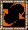
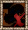

Los macros permiten a un usuario repetir determinada acción automáticamente infinitas veces, el Argentum Online consta con dos tipos de macros que aca se aclaran:
MACRO DE TRABAJO
 |
|
Pasos:
1) Selecciona y/o equipa la herramienta de trabajo (caña, hacha, serrucho, etc.).
2) Deja seleccionada la herramienta y apretá la TECLA MACRO TRABAJO (F8) o haz doble click en el martillo, en la esquina inferior derecha de la pantalla.
3) Deja el mouse sobre el agua, árbol, etc. y empezará a trabajar.
En el caso de ser un trabajo que requiera selección de un item por medio de una ventana (ej. herrería, carpintería, etc.), pone el mouse sobre una fragua, yunque, etc. y espera a que aparezca la ventana de creación de items, seleciona un item y apreta el botón construir.
4) Para apagar el macro presiona nuevamente la misma tecla o doble click otra vez en el martillo. 
A tener en cuenta:
-Mientras trabaja el macro se puede hablar en el juego.
-El macro trabaja a 900ms.
-Cualquier acción excepto la de hablar desactivará el macro, ya sea mover el personaje, minimizar el juego, seleccionar otro item, etc.
|
MACRO DE HECHIZOS

 |
|
Pasos:
1) Selecciona el hechizo que quieras lanzar.
2) Deja el mouse en la pantalla de juego o directamente sobre una criatura/usuario.
3) Presiona TECLA MACRO HECHIZOS (F7) o haz doble click en la imagen de flechas de la parte inferior derecha de la pantalla; y el macro empezará a lanzar el hechizo automáticamente cada cierto tiempo.
4) Para apagar el macro presiona nuevamente la misma tecla o vuelve a hacer doble click sobre el botón. 
|
SEGURO DE RESURRECCIóN
 |
|
Pasos:
Se activa con la tecla FIN o haciendo doble click sobre el fantasma en la parte inferior derecha de la pantalla. Está cargada por default y permite ser resucitado o no por otra persona.
|
CENTINELA

 |
|
El Centinela es un NPC automatizado o BOT, su función es chequear cada cierto tiempo a los usuarios para controlar que estén trabajando de forma asistida.
Si te llegara a aparecer el centinela te pedirá que escribas una clave aleatoria utilizando el comando /CENTINELA.
Atención:
-Es aconsejable desloguear y volver a loguear el personaje despues de haber estado trabajando (con macro de trabajo o manualmente) porque existe la posibilidad de que aparezca el centinela.
-Tenés 2 minutos para mandar la clave o de lo contrario el personaje será ejecutado.
-En caso de urgencia podes desloguear el personaje y será como haber mandado la clave.
-Si por alguna razón no viste la clave que pidió el centinela hacele doble click y la repetirá.
-También es posible que haya algún GM chequeando manualmente a los usuarios.
|
|
|